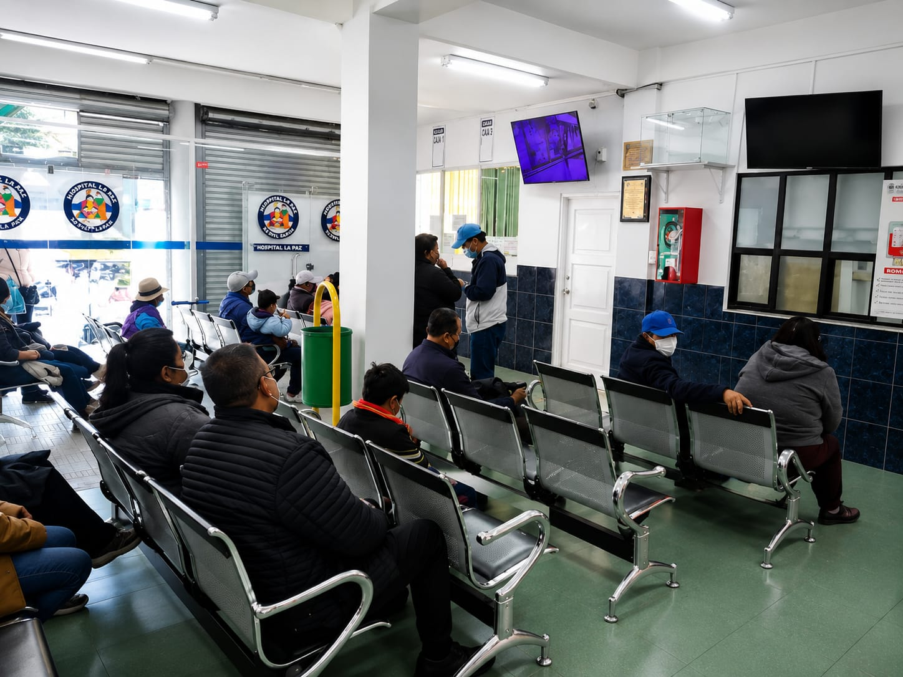

Sistema de Gestión de Farmacia Hospitalaria
HOSPITAL LOS PINOS

Presentacion
El Hospital Municipal Los Pinos, es una institución pública de segundo nivel del GAMLP ubicada en la zona Los Pinos de La Paz, brinda atención integral a través de servicios de consulta externa, emergencia 24 horas, internación, laboratorio y especialidades como medicina interna, cirugía, ginecología, pediatría y terapia intensiva. Para sostener la calidad de atención que ofrece a beneficiarios de programas de salud pública, el hospital requiere una gestión eficiente de medicamentos e insumos en todas sus áreas asistenciales.
La página web presenta todo el contenido desarrollado durante la investigación y modelado del sistema.
Contenido
Secciones Principales
Galería
Presentamos una muestra de los servicios y la atención que ofrecen el Hopital Los Pinos.
Ubicación
Dirección
Hospital Los Pinos
Zona Los Pinos, La Paz - Bolivia
Números de contacto
2271120 - 2271119
Horarios de atención
24 horas